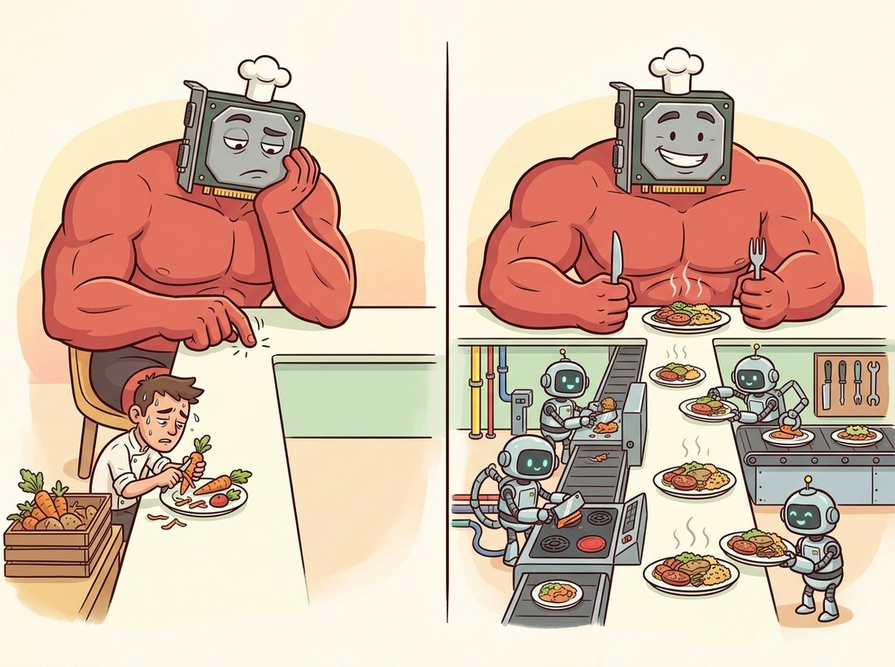

"The model is a hungry teenager and I am the kitchen. Stall me for one second and the whole expensive household sits around waiting for a sandwich."
A DataLoader Running Slightly Behind Schedule
The input pipeline is the unglamorous half of training that decides whether your expensive accelerator runs at full utilization or sits idle waiting for the next batch; PyTorch splits it into a Dataset that returns one example at a time and a DataLoader that batches, shuffles, and parallelizes their retrieval. This section builds both, applies the transforms and normalization statistics that make training stable, and explains the worker and pinned-memory settings that keep the GPU fed.
A training loop is only as fast as its slowest stage, and for many real vision projects that stage is not the network at all but reading and preparing data: decoding JPEGs, resizing, augmenting, moving bytes to the GPU. The loop of Section 18.5 assumes a stream of ready-to-eat batches; this section produces that stream. PyTorch's design cleanly separates two responsibilities. A Dataset answers "give me example number $i$" and knows nothing about batching. A DataLoader wraps a dataset and answers "give me the next batch", handling shuffling, collation into tensors, and parallel prefetching with worker processes.
1. The Dataset: One Example at a Time Beginner
A map-style Dataset is any object implementing two methods: __len__ (how many examples) and __getitem__(i) (return the $i$-th example, typically an (image, label) pair). That is the entire contract. The code defines a tiny dataset over an in-memory tensor of images to show how little is required, then notes the far more common case of loading from disk.
# A minimal map-style Dataset: the entire contract is __len__ (how many
# examples) and __getitem__ (return the i-th (image, label) pair), with an
# optional transform hook applied lazily, only when an example is fetched.
import torch
from torch.utils.data import Dataset
class TensorImageDataset(Dataset):
"""Wraps an (N,1,28,28) image tensor and an (N,) label tensor."""
def __init__(self, images, labels, transform=None):
self.images, self.labels, self.transform = images, labels, transform
def __len__(self):
return len(self.images)
def __getitem__(self, i):
img, label = self.images[i], self.labels[i]
if self.transform is not None:
img = self.transform(img) # per-example preprocessing/augmentation
return img, label
imgs = torch.rand(200, 1, 28, 28) # 200 fake grayscale images
lbls = torch.randint(0, 10, (200,))
ds = TensorImageDataset(imgs, lbls)
print(len(ds), ds[0][0].shape, ds[0][1].item()) # 200 torch.Size([1, 28, 28]) 7Dataset: __len__ returns the count and __getitem__ returns one (img, label) pair, applying the optional transform only when that example is fetched. The printed 200, torch.Size([1, 28, 28]), and label value confirm indexing returns a single grayscale image and its class.
The key design property is laziness: __getitem__ runs only when an example is requested, so a disk-backed dataset reads and decodes one image at a time rather than loading the entire dataset into memory. This is what lets a single laptop train on a dataset of millions of images that would never fit in RAM. For the standard benchmarks, torchvision ships ready-made datasets (torchvision.datasets.FashionMNIST, CIFAR10, ImageFolder for your own labeled folders) that implement exactly this contract, so you rarely write the class by hand.
2. The DataLoader: Batching, Shuffling, Parallelism Beginner
The DataLoader turns a stream of single examples into a stream of batched tensors. Its constructor exposes the four settings that matter most. batch_size sets how many examples per batch (the $N$ in (N, C, H, W)). shuffle=True reorders examples every epoch, which is essential for training because it decorrelates consecutive gradients (see the stochastic-gradient argument in Section 18.2) and must be False for validation so results are repeatable. num_workers spawns that many subprocesses to fetch and transform examples in parallel while the GPU is busy on the previous batch. pin_memory=True stages batches in page-locked host memory so the host-to-GPU copy is faster. The code wires them up and iterates one batch.
# A DataLoader wraps the Dataset and turns single examples into batched tensors,
# exposing the four settings that matter most: batch_size, shuffle, num_workers
# (parallel prefetch), and pin_memory (faster host-to-GPU copy).
from torch.utils.data import DataLoader
train_loader = DataLoader(
ds,
batch_size=64,
shuffle=True, # reshuffle every epoch; decorrelates gradients
num_workers=4, # 4 subprocesses prefetch while the GPU computes
pin_memory=True, # faster host-to-device transfer
drop_last=True, # drop a final ragged batch so all batches are size 64
)
xb, yb = next(iter(train_loader))
print(xb.shape, yb.shape) # torch.Size([64, 1, 28, 28]) torch.Size([64])
print(f"{len(train_loader)} batches per epoch") # 3 batches per epoch (200//64)DataLoader over the toy dataset from Code Fragment 1: batch_size=64 collates single examples into one (64, 1, 28, 28) tensor, shuffle=True reshuffles each epoch, four workers prefetch in parallel, and drop_last=True discards the ragged final batch. The print confirms 3 uniform batches per epoch from the 200-example set.
The num_workers setting is the single biggest lever on input throughput. With num_workers=0 (the default), data loading happens in the main process, serially, so the GPU waits idle during every fetch and transform. With several workers, loading overlaps computation and the GPU stays fed. The right number is hardware-dependent (a common starting point is the number of CPU cores, then tune by watching GPU utilization), and on Windows or in notebooks worker processes have launch quirks that the PyTorch data-loading docs spell out. Figure 18.4.1 shows why workers matter, contrasting a serial pipeline that strands the GPU with a parallel one that keeps it busy.
There is a particular flavor of heartbreak reserved for the engineer who rents a four-thousand-dollar-a-month GPU, launches training, and then watches nvidia-smi report 9 percent utilization. The accelerator is not slow; it is bored, tapping its fingers while a single-threaded CPU peels JPEGs one at a time. A starved GPU is the most expensive idle hardware on Earth, and num_workers is the line that hires enough sous-chefs to keep the plates coming. Check utilization before you blame the model. The illustration below contrasts the starved kitchen with the well-fed one.

3. Transforms and Normalization Intermediate
A transform is a function applied to each example in __getitem__. It serves two purposes: preprocessing that every example needs (convert to tensor, resize, normalize) and augmentation that only the training set gets (random crops, flips, color jitter) to enlarge the effective dataset and reduce overfitting. The geometric augmentations are the same homographies and warps you met as image-processing tools in Chapter 3, now repurposed as a regularizer; Chapter 21 makes augmentation policy a central topic. The single most important preprocessing step is normalization: subtracting the per-channel mean and dividing by the per-channel standard deviation so each input channel is roughly zero-mean and unit-variance, which keeps the activations in the well-behaved range that the initialization of Section 18.2 assumed. Those statistics are computed from the training set, the modern echo of the histogram statistics from Chapter 2.
# Train and validation transform pipelines: the training pipeline adds a random
# flip for augmentation that validation omits, both share the same normalization,
# and the final lines show how the channel mean and std are computed from data.
import torch
from torchvision.transforms import v2
# training transform: augment, then to-tensor, then normalize
train_tf = v2.Compose([
v2.RandomHorizontalFlip(p=0.5), # cheap, label-preserving augmentation
v2.ToImage(), # PIL/ndarray -> tensor image
v2.ToDtype(torch.float32, scale=True), # uint8 [0,255] -> float [0,1]
v2.Normalize(mean=[0.2860], std=[0.3530]), # Fashion-MNIST channel stats
])
# validation transform: NO augmentation, same normalization
val_tf = v2.Compose([
v2.ToImage(),
v2.ToDtype(torch.float32, scale=True),
v2.Normalize(mean=[0.2860], std=[0.3530]),
])
# computing the mean/std yourself from a training tensor:
imgs = torch.rand(1000, 1, 28, 28)
mean = imgs.mean(dim=(0, 2, 3)) # per-channel mean over N,H,W
std = imgs.std(dim=(0, 2, 3))
print(mean.item(), std.item()) # ~0.5 ~0.29 for uniform datatrain_tf adds a RandomHorizontalFlip that val_tf omits, both end in the same Normalize, and the closing imgs.mean(dim=(0, 2, 3)) shows how per-channel statistics are computed over the batch, height, and width axes. The printed mean and std land near 0.5 and 0.29 for the uniform fake data.Augmentation belongs only in the training pipeline. The validation and test transforms must be deterministic, no random flips, crops, or jitter, because their job is to measure the model on a fixed, realistic distribution. Worse still is computing normalization statistics from the test set, which leaks information about it into training. Compute mean and standard deviation from the training split alone, then apply those same frozen numbers to validation and test. Getting this wrong inflates your reported accuracy and produces a model that disappoints in production, the data-pipeline equivalent of grading your own exam.
The hand-written Dataset of subsection 1 is instructive, but for any standard benchmark torchvision hands you a fully implemented, downloaded, transform-aware dataset: train = torchvision.datasets.FashionMNIST(root="data", train=True, download=True, transform=train_tf) and the matching train=False for the test split. That single call replaces the dozens of lines you would write to download the archive, parse its binary format, and wrap it in the Dataset contract, and it ships the canonical splits so your numbers are comparable to published ones (see the chapter bibliography for the Fashion-MNIST and CIFAR references). For your own data, ImageFolder infers labels from directory names with zero custom code.
4. Splits, Class Imbalance, and Samplers Intermediate
A dataset must be split into train, validation, and test partitions, and the cardinal rule is that the test set is touched exactly once, at the very end. The validation set guides every decision during development (which model, which hyperparameters, when to stop); the test set delivers the single honest final number. torch.utils.data.random_split performs the partition reproducibly when seeded.
A second pipeline concern is class balance. When classes are imbalanced, a common vision reality where defects, rare diseases, or rare objects are vastly outnumbered, a uniform shuffle over-samples the majority class and the model learns to ignore the minority. A WeightedRandomSampler fixes this by drawing examples with probability inversely proportional to class frequency, so each batch is roughly balanced; you pass it to the DataLoader via the sampler argument (and then leave shuffle at its default, since the sampler controls ordering). This connects directly to the evaluation thinking of Chapter 16: an imbalanced dataset also demands metrics beyond raw accuracy, which Section 18.5 takes up.
Who: A team building an automated quality gate for a circuit-board assembly line, classifying each board as pass or fail from a top-down photo.
Situation: Their first classifier reported 92 percent validation accuracy and was approved for a pilot. On the line it flagged almost no defective boards.
Problem: Real defect rates were about 8 percent, so the dataset was 92 percent "pass". A model that predicts "pass" for every board scores 92 percent accuracy while catching zero defects, exactly the degenerate solution the imbalanced data rewarded. The DataLoader's uniform shuffle fed batches that were almost entirely "pass", so the gradient barely ever pushed toward recognizing a defect.
Decision: The team switched to a WeightedRandomSampler that up-weighted the rare "fail" class so batches were roughly balanced, and changed the reported metric from accuracy to per-class recall and the F1 score on the defect class.
Result: Defect recall rose from near zero to the mid-eighties, accuracy dropped to a more honest 88 percent (because the model now made some false-positive calls it had previously avoided by never flagging anything), and the pilot actually caught bad boards. The "drop" in accuracy was the model finally doing its job.
Lesson: The data pipeline shapes what the model can learn. An imbalanced sampler and an accuracy-only metric will happily certify a model that has learned the prior and nothing else. Balance the batches and measure the metric you actually care about.
The chapter lab trains on a ready-made benchmark, but the pieces in this section let you build the same classifier on images you collected yourself, which is the step that turns a tutorial into a portfolio project. Sort a few hundred of your own photos into one folder per class (for example cats/ and dogs/, or fresh-versus-spoiled produce, or the defect-versus-pass boards of the practical example above), point torchvision.datasets.ImageFolder at the parent directory, and it builds the entire Dataset with labels inferred from the folder names and no custom code. Add a resize and the train-only augmentation pipeline of subsection 3, compute the normalization statistics from your own training split, and reach for a WeightedRandomSampler if your classes are lopsided. Feed the result into the chapter's training loop and you have an end-to-end model on data nobody else has. Difficulty: intermediate, about 2 to 3 hours including collecting and sorting the images. The same ImageFolder-plus-loop skeleton scales straight into the transfer-learning recipes of Chapter 21, where a pretrained backbone makes a few hundred images per class genuinely enough to reach useful accuracy.
As accelerators have gotten faster, the input pipeline has increasingly become the limiting factor at scale, and 2024 to 2026 work targets exactly this. WebDataset and the maturing torchdata / StatefulDataLoader stack stream sharded tar archives so training reads data sequentially off cloud object storage instead of random-accessing millions of small files. NVIDIA DALI moves JPEG decode and augmentation onto the GPU itself, removing the CPU from the critical path. FFCV showed order-of-magnitude throughput gains for ImageNet-scale training by compiling the loading pipeline and using a custom on-disk format. The Dataset and DataLoader abstractions in this section remain the interface; what is changing underneath is how the bytes get from storage to tensor fast enough that the GPU, not the kitchen, is again the bottleneck.
Explain why shuffle=True is important for the training DataLoader but should be False for validation and test. Address two effects of training-time shuffling: its impact on the correlation between consecutive mini-batch gradients (link to the stochastic-gradient argument in Section 18.2), and what happens to a model if the data arrives sorted by class. Then explain why shuffling validation would not change the reported metric but would still be undesirable for reproducibility.
Download CIFAR-10 with torchvision, compute the per-channel (R, G, B) mean and standard deviation over the training split only, and compare your numbers to the widely published constants. Then build two transform pipelines, one normalizing with your computed stats and one skipping normalization, train the chapter's MLP briefly on each, and report the difference in how fast the training loss falls in the first few hundred steps. Explain the result in terms of keeping activations in the range the initialization assumes.
Set up a DataLoader with an artificially slow transform (insert a small time.sleep in __getitem__) and measure epoch wall-clock time for num_workers in {0, 2, 4, 8}. Plot time against worker count and identify the point of diminishing returns. Then, using the timeline picture of Figure 18.4.1, explain why adding workers helps up to a point and what determines that ceiling. State how you would tell, from GPU utilization alone, whether a real training run is input-bound or compute-bound.